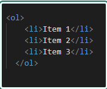
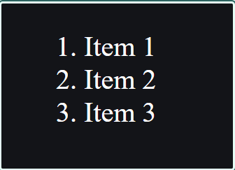

Нумерованный список (ol) используется для создания списка с нумерованными элементами. Этот тип списка используется, когда элементы списка должны быть представлены в определенном порядке. Создать нумерованный список можно с помощью тега (ol), который обозначает "ordered list", и тега (li). Например:
В браузере:
